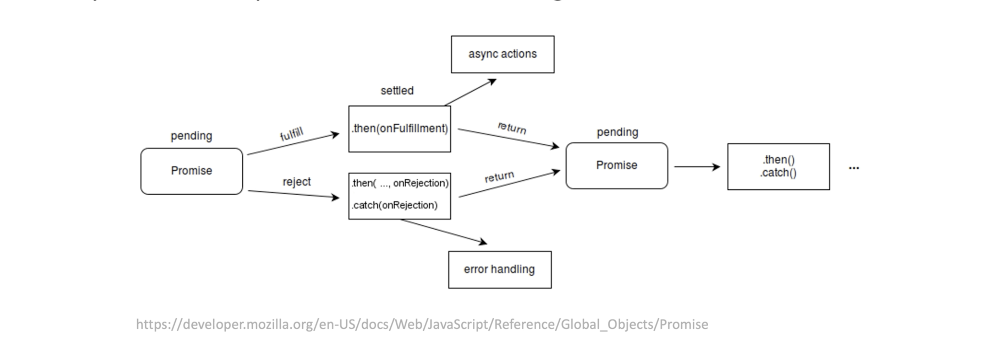

Please review the concepts covered this week.
Asynchronous code has events that are independent of the main program flow and are outside the program’s main thread.
Here's a simple example.
/*
This code has an asynchronous setTimeout event
running outside the main program's event loop
*/
function first() {
setTimeout(function() {
console.log('the timer is done running outside the main event loop now!');
}, 2000);
return 'first'
};
function second() {
return 'second'
}
function third() {
return 'third'
}
console.log(first());
console.log(second());
console.log(third());
>
first
second
third
undefined
the timer is done running outside the main event loop now!
A promise object represents the eventual completion, or failure, of an asynchronous operation, and its resulting value.
Here's a simple example.
//You promise to do your laundry
//this promise is either resolved or rejected
let p = new Promise((resolve, reject) => {
let laundryDone = false
if (laundryDone==true) {
//resolve the promise here
resolve('Success')
} else {
//reject the promise here
reject('Failed')
}
})
//Do something else after the promise resolves w/ .then
//Do something w/ error w/ .catch
p.then((message) => {
console.log('This message is in the .then: ' + message)
}).catch((message) => {
console.log('This message is in the .catch: ' + message)
})
>> This message is in the .catch: Failed
Async functions are "syntactic sugar" (aka, cleaner, shorthanded syntax) to return and handle promises, that avoid messy nested promise chains.
Here's a simple example.
function resolveAfter3Seconds() {
return new Promise(resolve => {
setTimeout(()=> {
resolve('resolved');
}, 3000);
});
}
async function asyncCall() {
console.log('Calling now!');
const result = await resolveAfter3Seconds();
console.log(result);
}
asyncCall();
>>Calling now! //asyncCall awaits the callback function resolveAfter3Seconds
>>Promise {<pending>} //Three seconds now pass
>>resolved //The promise is caught in the result variable, and is resolved